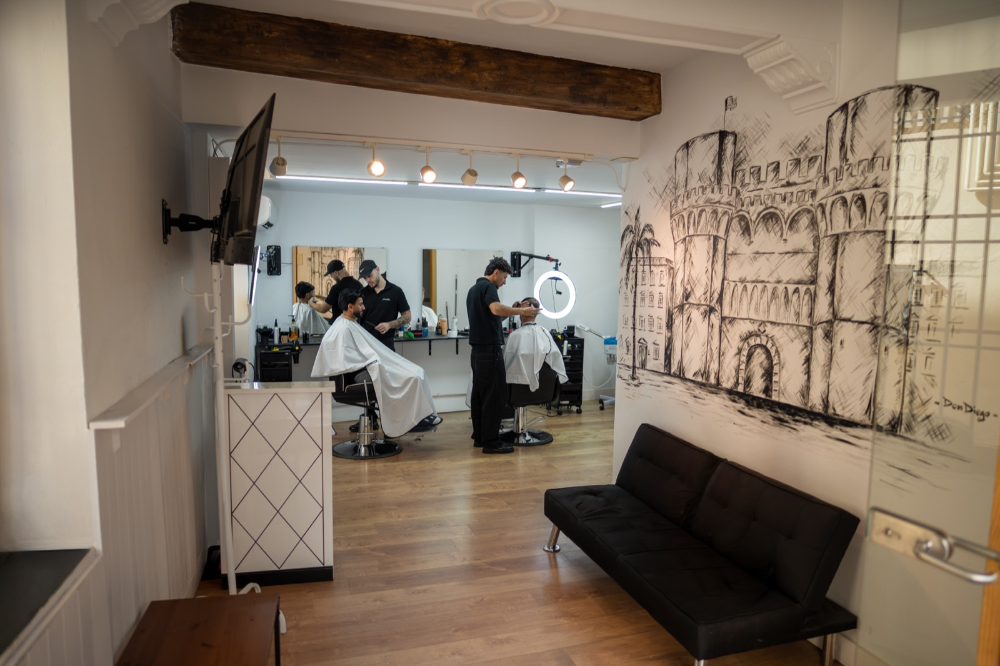
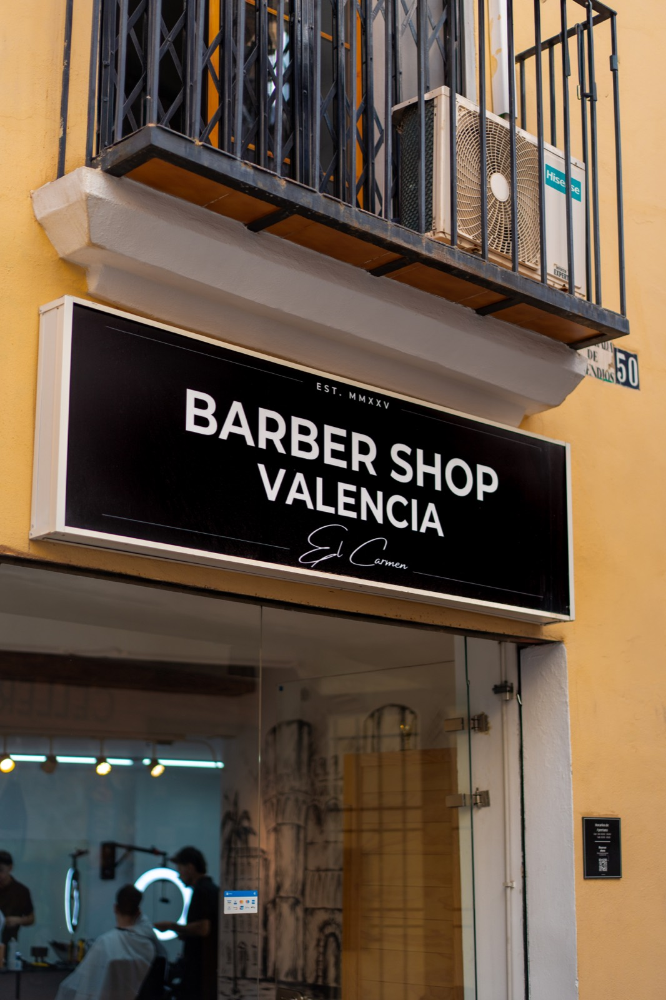
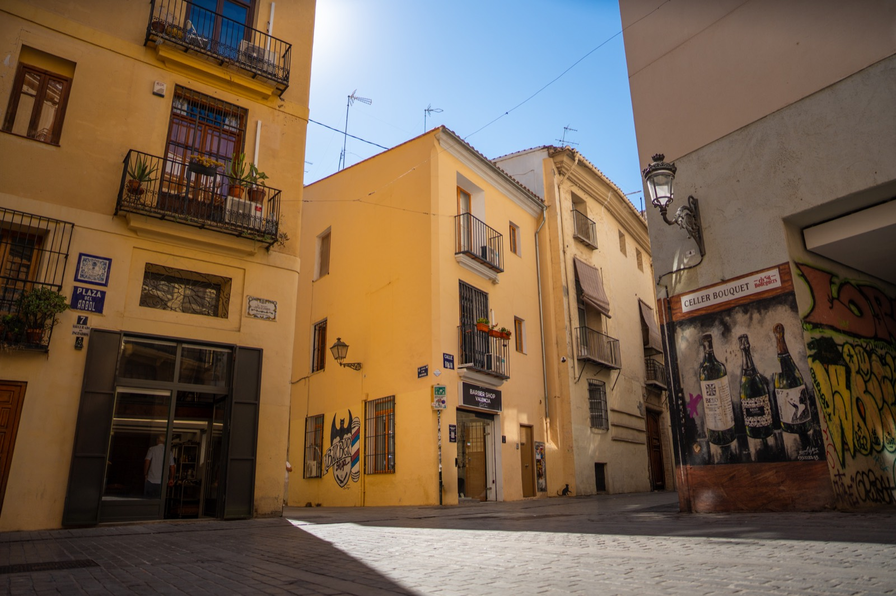
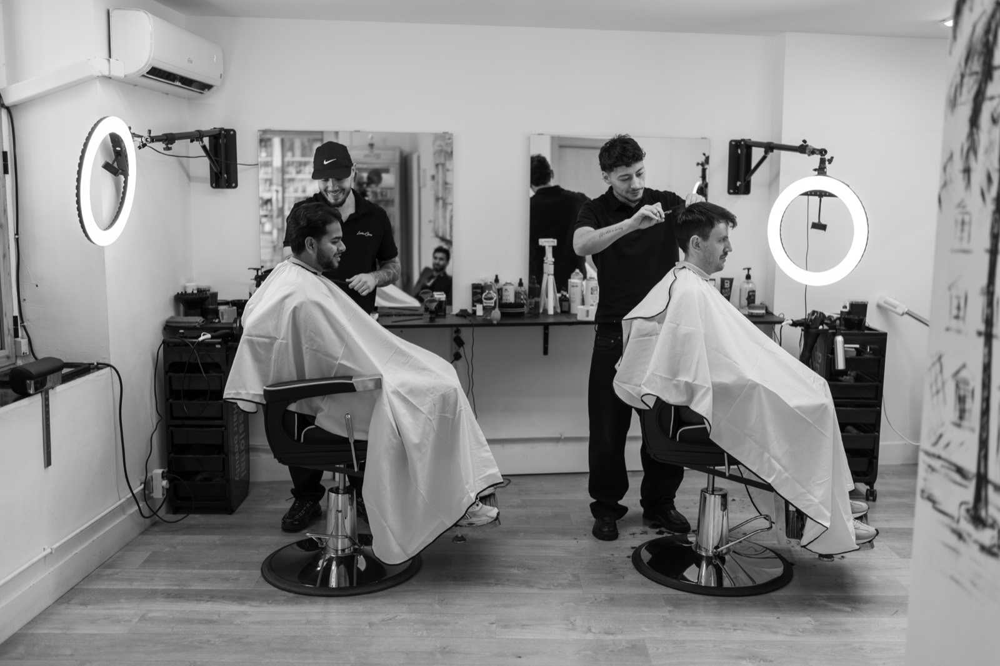

9 de octubre en Valencia: qué significa y barbería abierta en La Petxina
Feriado del 9 d’octubre: La Petxina abierta para tu corte, El Carmen cerrado. Ideas para el día y looks para celebrar.
Leer artículoBlog
Tendencias, consejos y novedades de Barber Shop Valencia. Cortes, barba y estilo en El Carmen y La Petxina.
Feriado del 9 d’octubre: La Petxina abierta para tu corte, El Carmen cerrado. Ideas para el día y looks para celebrar.
Leer artículo
Dos locales en Valencia, barberos expertos y reserva online. Así es la experiencia Barber Shop Valencia.
Leer artículo
Reserva online, llega a tu hora y sal con el corte listo. Así funciona nuestra cita previa en Valencia.
Leer artículo
Qué pedir en la silla, cuánto dura un corte y cómo mantenerlo entre visitas en Valencia.
Leer artículo
Criterio en el corte, ambiente cuidado y dos direcciones fáciles en Valencia. Lo que nos piden al buscar “la mejor barbería”.
Leer artículo